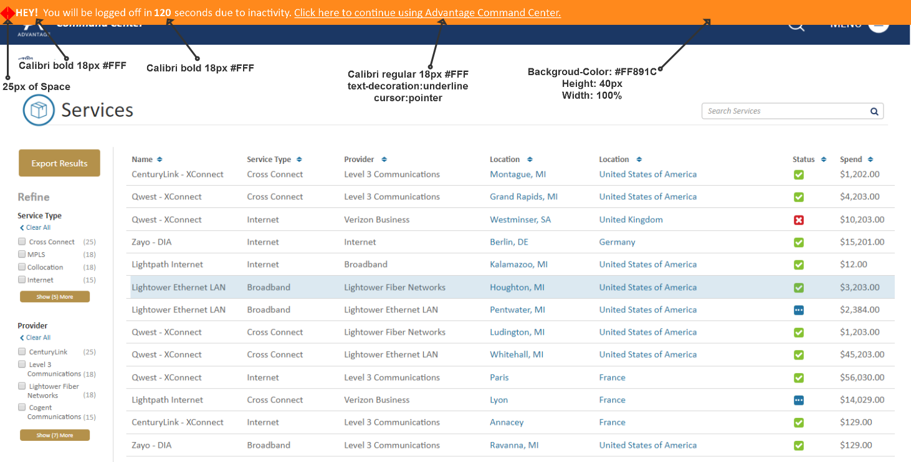
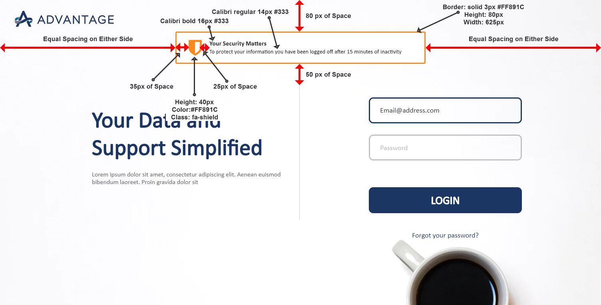

Because No One Ever Said "This Is Too Easy To Understand"
vMOX & Advantage Session Timeout Interaction
Created May 22 2018
Composed by Craig Graham
Key Points - Session Timeout:
- Reset the session timer as often as possible to minimize the occurrence of timeouts
- If the session has expired and everything the user did can be restored in-place, then make it so! If it can't be restored - apologize profusely!
- Session timeout falls under the accessibility standard of "Timed Responses". Therefore we need to both notifiy the user the timeout is occuring and give them an opportunity to extend their session.
- Mockup can be viewed at: vMOX & Advantage Session Timeout
Our session timeout interaction was designed to notify the user of a impending session with plenty to time to extend their session if needed. Accessibility standards for "Timed Responses" tell us that we need to provide all users with ample time to complete a task (you can find the referenced standard at: Guideline 2.2). Therefore our design gives users 120 seconds to extend their session. The design also follows the principles of visibility, consistency & standards and feedback by displaying the warning at the top of the page and by informing the user why they have been logged out once they are presented with the login page.
Menu Interaction & Style
Warning Banner
If the user has been inactive for 13 minutes the application should present a Session Timeout Countdown Warning Banner as shown in the screen shot below. The warning banner should countdown from 120 seconds to 0 seconds, at which point it will redirect the user to the login screen where a message is left for the user explaining what happened. If the user does happen to still be viewing the page when the warning banner is presented they have the option to click on the call to action within the banner to extend their session for another 13 minutes (at which time they would be presented with the warning banner once again).
Session Timeout Countdown Warning Banner
Login Page with Session Timeout Message
Should the user not be available to click the call to action to extend the session or should they simply decide not to extend the session they will be redirected to the login page. In this case we will provide the user with visibility and feedback into why they have been logged out of the system using a bordered message box as shown in the screen shot below. Once the user logs back in we should do everything we can to return the application to the state they left it in. If we cannot do so, we should apologize to the user through the use of a modal message.
Login Form Page With Session Timeout Message
Responsive Design
Tablet
A tablet version of the Session Timeout Interaction has not yet been developed
Mobile
A mobile version of the Session Timeout Interaction has not yet been developed
Related Icons & Images
There are no image files related to this design
Similar Components
There are no related components at this time for this design